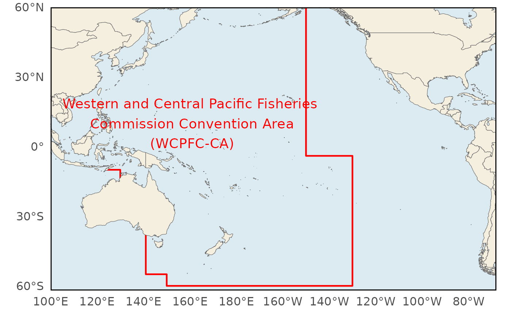
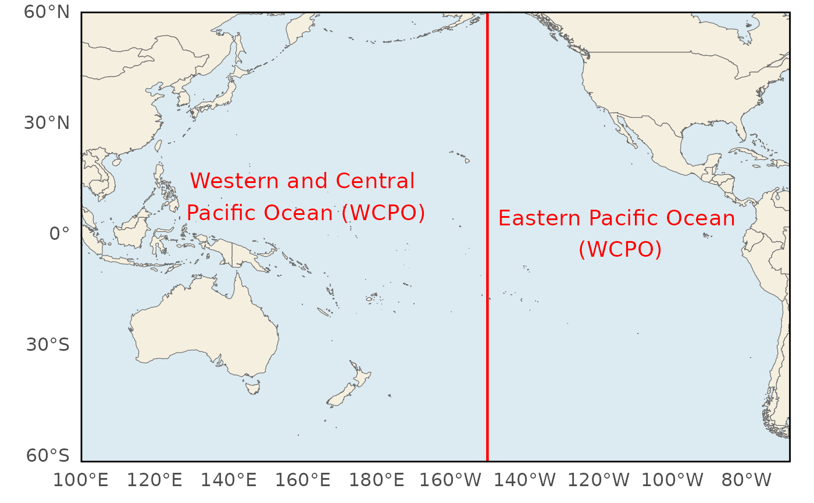
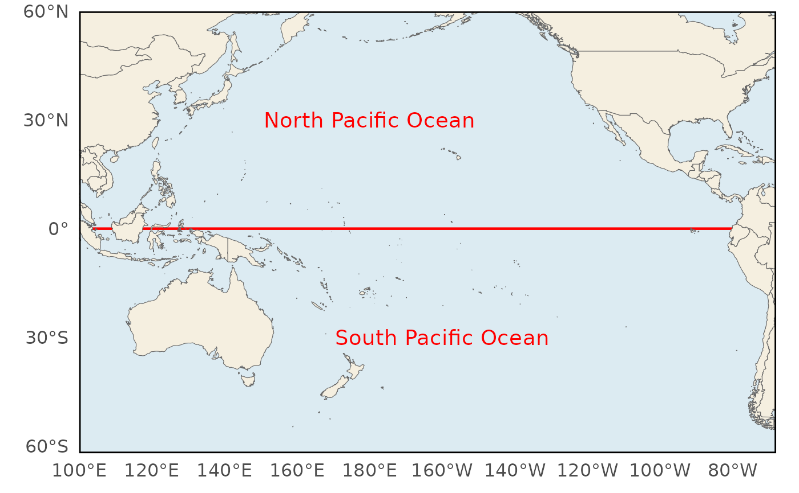
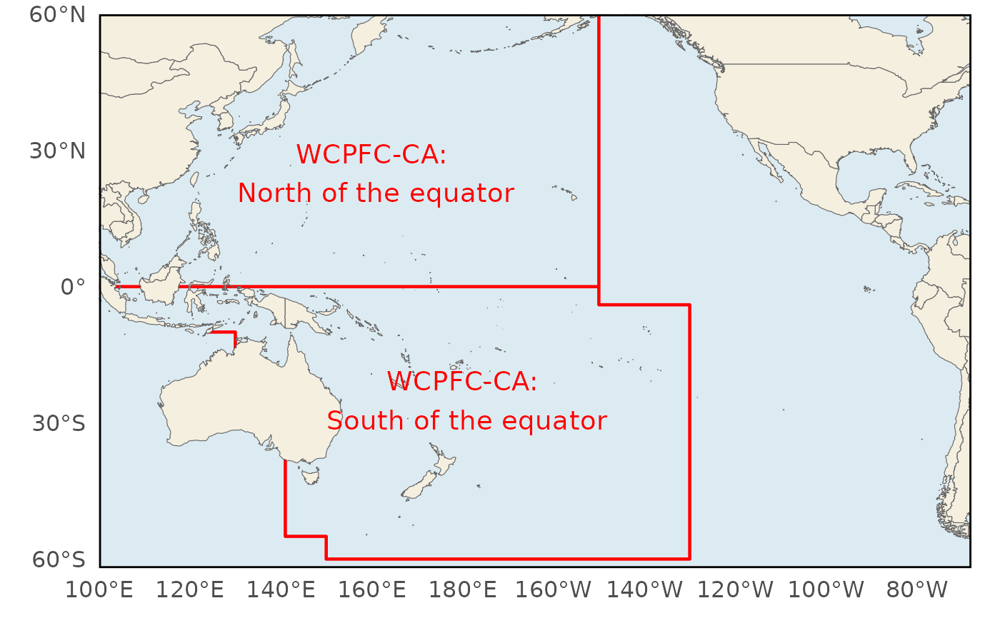
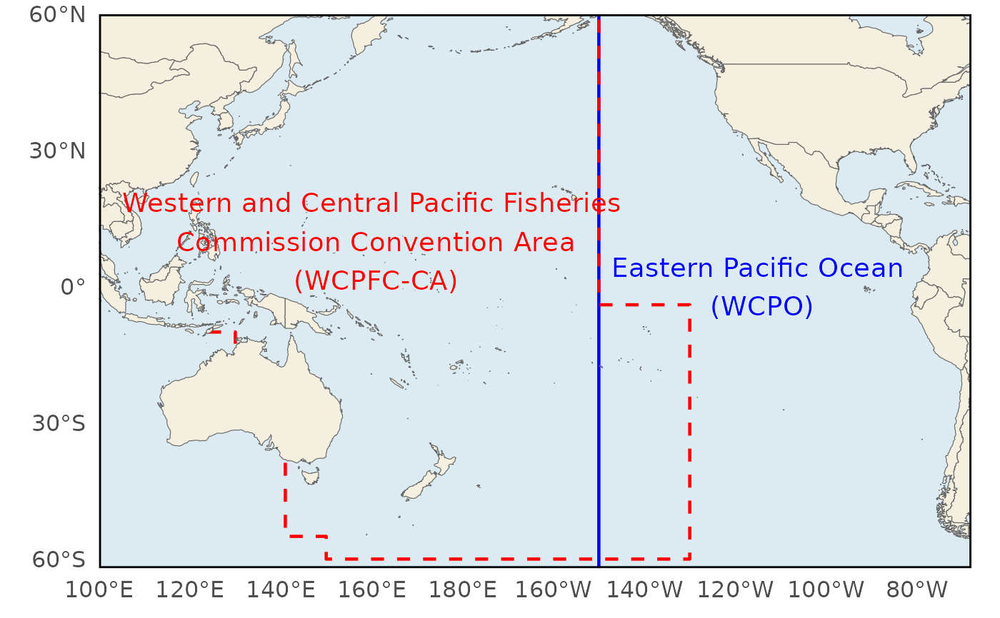
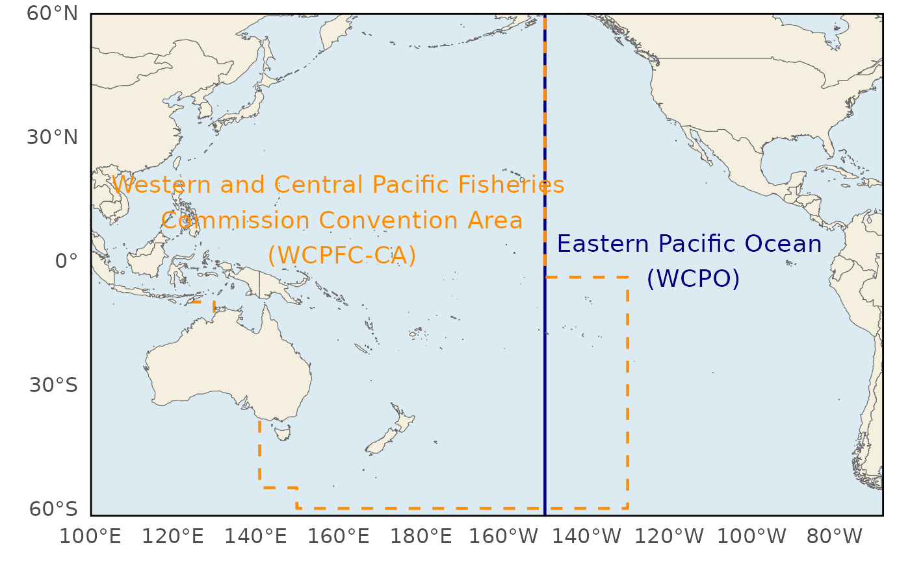
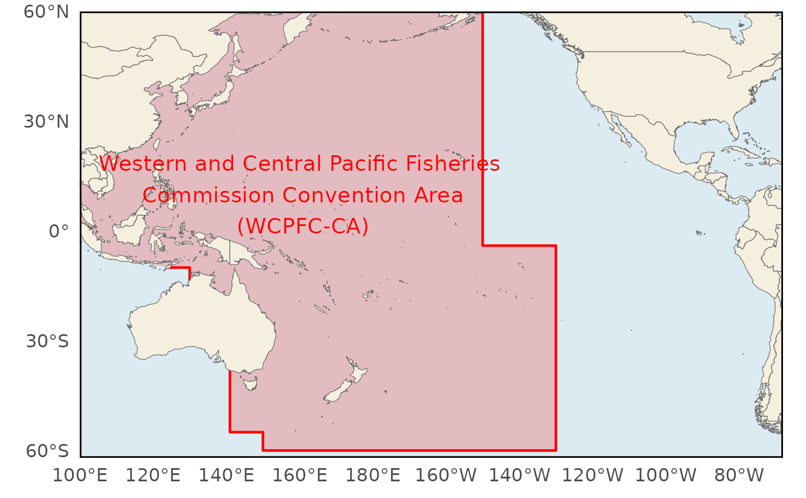
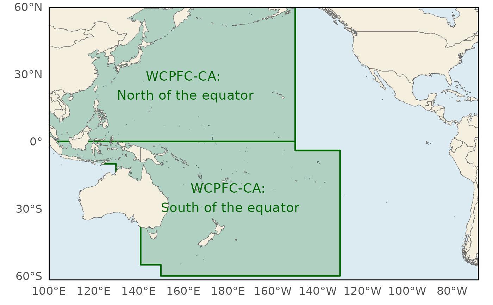

PLot Pacific Statistical Region Lines to a Map
plot_statistical_region.RdLayers region boundary lines and text annotations onto an existing Pacific
map (typically from plot_pacific()). The region type is specified by
type, with each type corresponding to a particular combination of lines
and text annotations.
Usage
plot_statistical_region(
type,
colour1 = "red",
colour2 = "blue",
shading = FALSE,
alpha = 0.2,
...
)Arguments
- type
Character string indicating the region set to add. One of:
- "wcpfc"
Western and Central Pacific Fisheries Commission Convention Area.
- "wcpo_epo"
Western-Central Pacific Ocean and Eastern Pacific Ocean split, separated by the 150°W meridian.
- "npo_spo"
North Pacific Ocean and South Pacific Ocean split, separated by the equator.
- "nx_sx"
Northern and Southern regions within the WCPFC Convention Area, separated by the equator west of the WCPFC boundary.
- "wcpfc_epo"
Overlay of the WCPFC Convention Area and the WCPO/EPO split. Colours can be customised using
colour1andcolour2.
- colour1
Colour used for the first region in map types that support colour customisation. Defaults to
"red".- colour2
Colour used for the second region in map types that support colour customisation. Defaults to
"blue".- shading
Logical. If
TRUE, shade the region(s) relevant totype. Where a plot type shares one colour across multiple sub-regions (e.g."nx_sx"), their union is shaded as a single area.- alpha
Shading transparency. Defaults to
0.2.- ...
optional arguments to be passed to the
plot_pacificfunction
Examples
plot_statistical_region("wcpfc")

plot_statistical_region("wcpo_epo")

plot_statistical_region("npo_spo")

plot_statistical_region("nx_sx")

plot_statistical_region("wcpfc_epo")

# Custom colours
plot_statistical_region("wcpfc_epo", colour1 = "darkorange", colour2 = "navy")

# With shading
plot_statistical_region("wcpfc", shading = TRUE)

plot_statistical_region("nx_sx", colour1 = "darkgreen", shading = TRUE)
